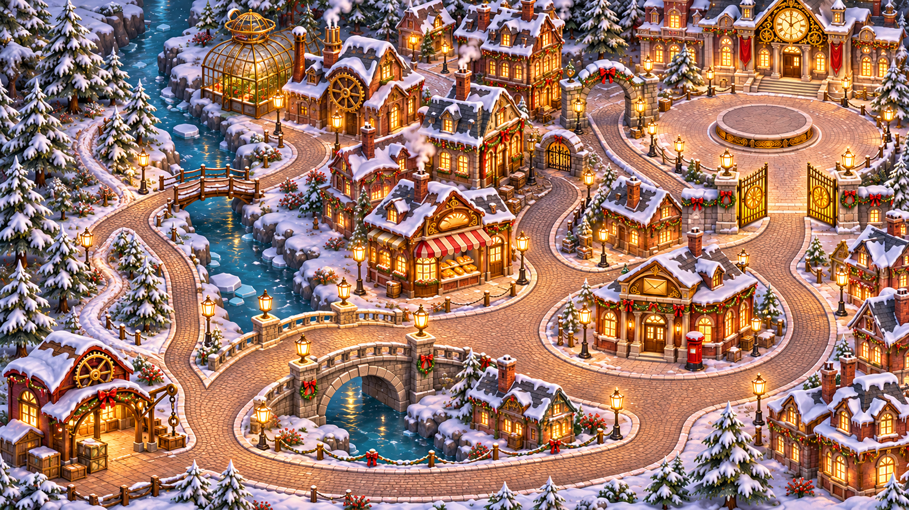
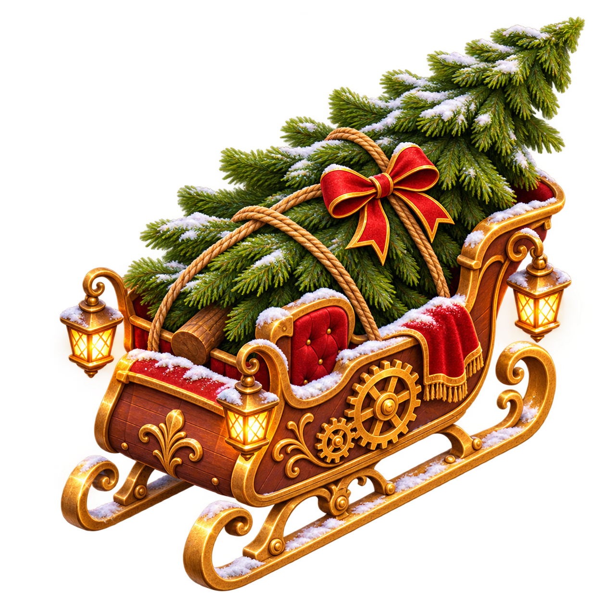

5 декабряОГЭРазвилка 1 из 4

Управляй санями на зимних развилках

Проверяем публикацию математических заданий…
Перед началом реши математическое задание.
Лесная развилка
3 математических задания·15–17 минут

Тик: «Ёлка нужна Хронбургу до праздника. Проложим безопасный путь!»
Подсказка Тика
Для огромной ели нужна широкая дорога.
Задания станут доступны после публикации.